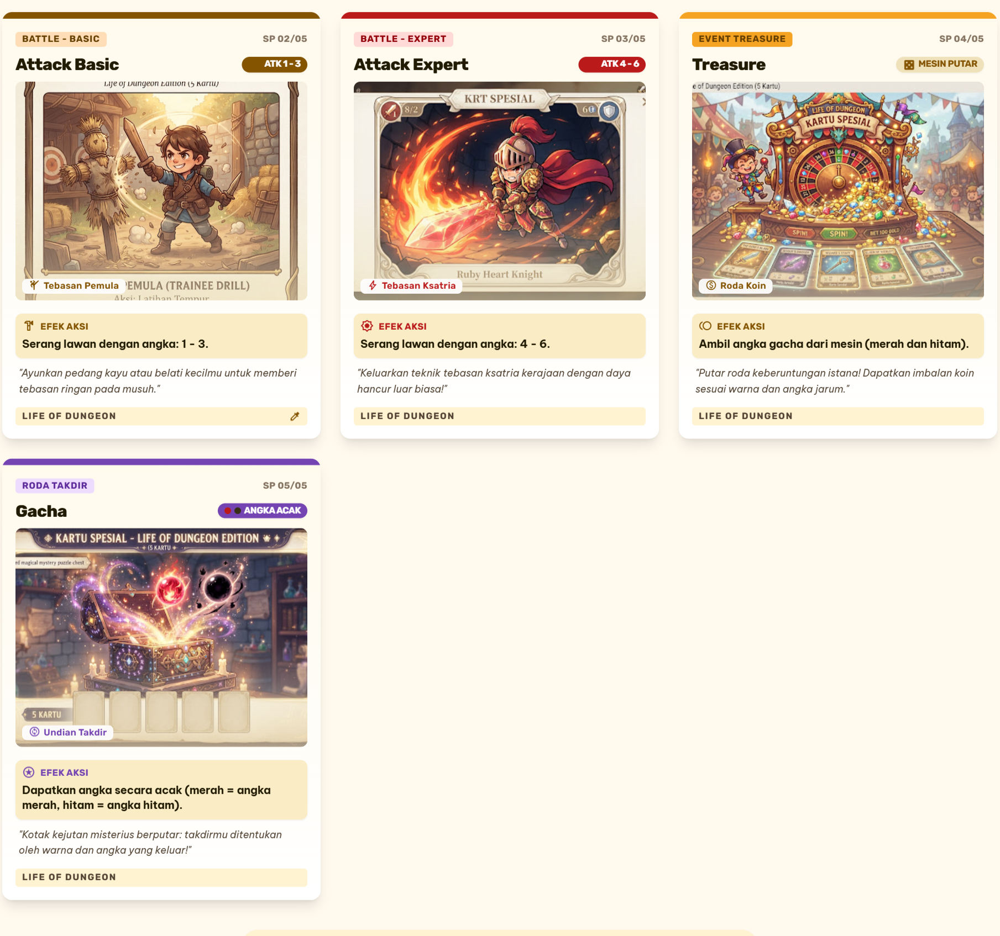

Peraturan umum
- Dimainkan 2–4 pemain, masing-masing memakai 1 pion karakter.
- Modal awal: 100 Koin dan 4 kartu Battle.
- Mulai dari petak START, bergerak searah jarum jam.
- Semua transaksi melewati Menteri Keuangan.
Buku Pedoman & Peraturan — Edisi Meja
Life of Dungeon adalah permainan papan strategi dan keberuntungan bertema kerajaan dan dungeon. Kamu mengelola Koin, memutar spinner, membeli rumah, dan memakai kartu di momen yang tepat — semua demi menjadi pemain dengan kekayaan tertinggi di akhir permainan.
Setiap petak adalah cerita. Setiap putaran spinner adalah takdir.
Siapkan komponen ini sebelum giliran pertama dimulai. Susun papan di tengah, letakkan tumpukan kartu di sisi yang mudah dijangkau, dan pastikan setiap pemain punya koin awal serta kartu battle.





Papan memiliki enam jenis petak. Kenali ikonnya agar kamu tahu tindakan apa yang harus dilakukan saat pion berhenti.
+ Koin
Kamu menerima koin dari Menteri sebesar angka hasil spin.
Serang
Pilih satu lawan, gunakan kartu Attack. Yang kalah mundur sesuai angka spin.
Beli / Sewa
Beli wilayah kosong atau bayar sewa saat berhenti di wilayah pemain lain.
Ambil kartu
Ambil satu Kartu Action dan jalankan efeknya sebelum giliran berpindah.
Tantangan
Ambil satu Kartu Tantangan. Selesaikan tantangannya sesuai instruksi kartu.
Putar lagi
Putar spinner untuk menentukan efek atau langkah tambahan sesuai aturan petak.
Semua efek ini wajib dijalankan. Jika koinmu tidak cukup untuk membayar, kamu wajib menjual aset atau berhutang ke Menteri Keuangan.
| Kartu | Efek |
|---|---|
| Pajak Kerajaan | Bayar 3 Koin ke bank |
| Hadiah Raja | +5 Koin dari bank |
| Serangan Bandit | Kehilangan 2 Koin |
| Bantuan Rakyat | +3 Koin dari bank |
| Undangan Istana | Maju 2 petak |
| Jalan Tersembunyi | Mundur 2 petak |
| Perdagangan Kerajaan | Tukar 2 Koin menjadi 5 Koin |
| Festival Kerajaan | Semua pemain +2 Koin |
| Perintah Raja | Lewati 1 giliran |
| Keberuntungan Pedagang | Ambil 1 kartu tambahan |
| Penjaga Gerbang | Bayar 2 Koin untuk lewat |
| Harta Karun | +4 Koin dari bank |
| Serangan Naga | Pilih satu pemain untuk mundur 3 petak |
| Jalan Rahasia | Maju 3 petak |
| Kutukan Penyihir | Pemain pilihanmu harus melewatkan 1 giliran |
| Perlindungan Ksatria | Abaikan efek negatif dari satu kartu yang diterima |
| Portal Ajaib | Pindah ke petak Action terdekat |
| Serangan Mendadak | Pilih satu pemain untuk mundur 2 petak |
| Berkah Kerajaan | Mainkan satu giliran tambahan |
| Jebakan Dungeon | Mundur 3 petak |
| Perintah Ratu | Tentukan satu pemain untuk maju 2 petak |
| Ramalan Penyihir | Lihat 3 kartu teratas dari tumpukan kartu Action, lalu pilih 1 kartu untuk digunakan |
| Perang Antar Kerajaan | Semua pemain melakukan suit. Pemain yang kalah harus melewatkan 1 giliran |
| Kebangkitan Pahlawan | Batalkan efek kartu Action yang baru saja diberikan kepadamu |
Ditarik saat pion mendarat di petak tanda seru hitam.
| Kategori | Jumlah | Contoh kartu |
|---|---|---|
| Direct Attack | 5 kartu | Tebasan Kilat, Amukan Monster |
| Magic & Mana | 5 kartu | Ledakan Bola Api, Meditasi Gua |
| Traps & Hazards | 5 kartu | Jebakan Duri, Pintu Terkunci |
| Treasure & Gacha | 5 kartu | Harta Karun Naga, Kotak Pandora |
| Chaos & Mayhem | 5 kartu | Pencuri Licik, Pertukaran Dimensi |
| Boss & Economy | 5 kartu | Penjaga Gerbang, Pajak Dungeon |
| Eksplorasi & Taktik | 15 kartu | Kunci Kerangka, Pahlawan Dungeon |
Contoh kartu — Tebasan Kilat (Direct Attack): putar spinner. Ganjil: berikan 2 damage ke pemain di petak terdekat. Genap: kamu sendiri kehilangan 1 Mana.
Contoh kartu — Harta Karun Naga (Treasure): ambil langsung 6 Koin emas dari bank, tanpa spin dan tanpa syarat.
Contoh kartu Eksplorasi: Kunci Kerangka (buka 1 pintu terkunci gratis), Mata Air Penyembuhan (pulihkan 2 Mana atau +2 Koin), Lorong Berduri (bayar 1 Koin atau mundur 1 petak), Sergapan Orc (battle mendadak, ATK 2), Gulungan Penyihir (+1 pada Attack berikutnya).
Untuk membeli, kamu harus berhenti tepat di petak wilayah yang belum dimiliki, lalu memutar spinner: warna merah memakai harga merah, warna hitam memakai harga hitam. Tidak boleh membeli jika koin tidak cukup.
| Rumah | Harga beli (merah / hitam) | Harga jual (merah / hitam) | Sewa |
|---|---|---|---|
| Pondok Perkampungan Tier 1 — Subur Vale | 15 / 20 Koin | 30 / 45 Koin | 10 Koin |
| Rumah Batu Gothic Tier 2 — Benteng Lembah Berkabut | 20 / 25 Koin | 35 / 50 Koin | 15 Koin |
Pemenang adalah pemain dengan kekayaan bersih tertinggi: total Koin ditambah nilai rumah dan aset, dikurangi seluruh utang. Jika seri, pemilik rumah terbanyak menang.
Selamat menjelajah, calon Raja Dungeon!